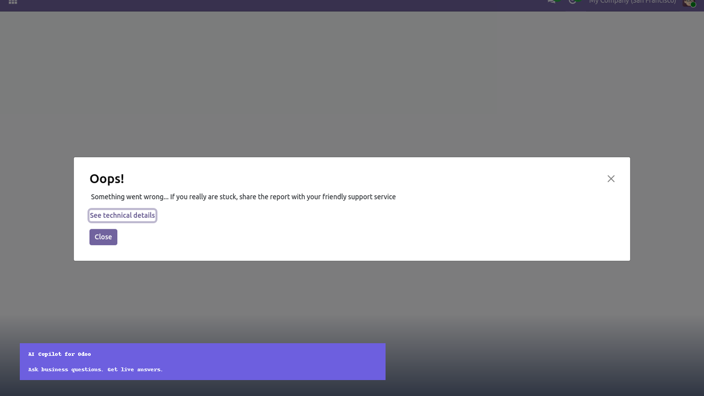
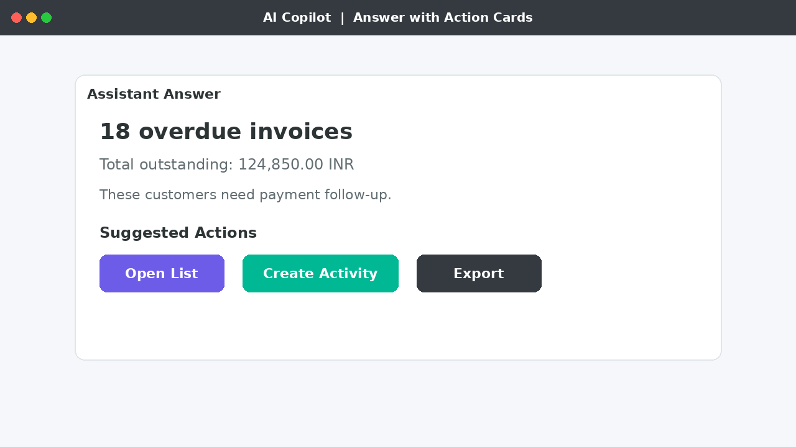
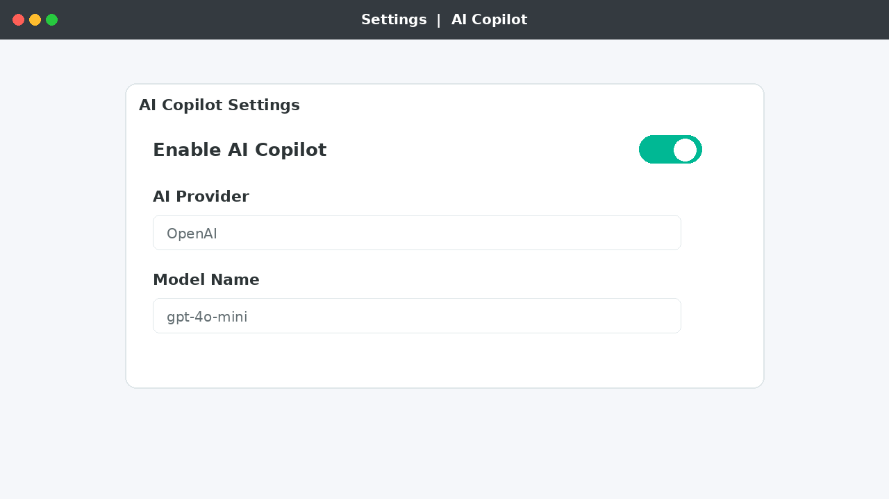

Your smart business companion inside Odoo. Ask what you need in plain language and get insights from your own company data.
Simply type what you want, for example "Show overdue invoices" or "Why did revenue decrease this month?" and AI Copilot returns a clear answer with next actions.
Built for self-service use by your own team in your own Odoo.
Works on Odoo 19 Community.
Compatible with Odoo 19 Enterprise.
Ready to deploy on Odoo.sh.
Ask the question. Get the answer without opening multiple apps.
Works like a guided assistant, so teams can start immediately.
Live insights help managers act in the moment.
Answers use current Odoo records, not static reports.
Each user keeps their own chats and can revisit earlier questions.
Install, enable, and start asking. Built for your own Odoo environment.
Sales
Accounting
Inventory
CRM
Note: Phase 1 focuses on analytics and ready-made business insights. Guided write actions and advanced AI providers come in later phases. Results depend on your Odoo data and user access rights.

Ask Copilot workspace with conversation and suggested questions.

Answers include action cards such as Open List and Create Activity.

Enable and configure AI Copilot from Settings.
Need help with installation, configuration, or usage? Contact ARMORAIT for implementation and support.
Website: www.armorait.com
Email: info@armorait.com
ARMORAIT builds practical Odoo apps focused on real business workflows. AI Copilot is designed so your team can install it and use it on their own Odoo instance.